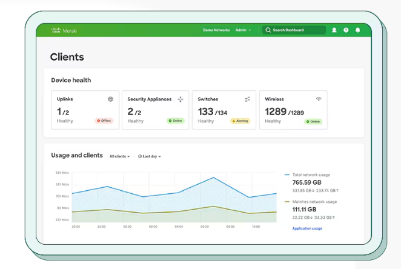

Réseaux et sécurité¶
Gestion du Wi-Fi¶
Wi-Fi Personnel (Domestique) Wi-Fi Entreprise
Configuration sécurisée¶
Paramètres essentiels¶
- Nom du réseau (SSID)
- ✅ Nom neutre sans indication d'entreprise
-
❌ Éviter "ComptabiliteParis" ou "DirectionGenerale"
-
Mot de passe
- Minimum 12 caractères
- Mélange majuscules, minuscules, chiffres, caractères spéciaux
-
Exemple : "P@ssw0rd-WiFi-2024!"
-
Chiffrement
Recommandé : WPA3 Acceptable : WPA2 À proscrire : WEP, WPA1
Sécurisation avancée¶
- Filtrage MAC
- Liste blanche d'appareils autorisés
- Exemple de format : XX:XX:XX:XX:XX:XX
-
Mise à jour régulière de la liste
-
Isolation des clients
- Empêche la communication entre appareils
- Idéal pour réseau invité
- Protection contre la propagation malware
Menaces courantes et solutions¶
Evil Twin (Faux point d'accès)¶
- Scénario : Un attaquant crée un point d'accès identique au vôtre
- Détection :
- Surveillance des SSID similaires
- Analyse des signaux radio
- Protection :
- Certificats clients
- Formation des utilisateurs
Attaque par déauthentification¶
- Scénario : Déconnexion forcée des clients
- Impact : Interruption de service
- Solutions :
- WPA3 (Wi-Fi Protected Access 3)(protection native)
- Détection d'intrusion wireless
- Géolocalisation des attaques
Bonnes pratiques de déploiement¶
Cartographie et planification¶
- Étude du site
- Mesure de la couverture
- Points d'accès nécessaires
- Zones sensibles
Segmentation réseau¶
- Exemple de VLANs
Un VLAN est un réseau local virtuel qui permet de segmenter logiquement un réseau physique en plusieurs réseaux isolés.
VLAN 10 : Administration
VLAN 20 : Employés
VLAN 30 : Invités
VLAN 40 : IoT
-
Sans VLAN :
Switch ├─ PC1 } ├─ PC2 } Tous les appareils peuvent communiquer entre eux ├─ PC3 } sur le même réseau physique └─ PC4 } -
Avec VLANs :
Chaque VLAN est isolé des autres, comme des réseaux physiques séparésSwitch ├─ PC1 } VLAN 10 (Administration) ├─ PC2 } VLAN 20 (Employés) ├─ PC3 } VLAN 30 (Invités) └─ PC4 } VLAN 40 (IoT) -
Sécurité
- Isolation du trafic entre départements
- Limitation de la propagation des menaces
-
Contrôle des communications inter-VLAN
-
Performance
- Réduction du trafic broadcast
- Meilleure gestion de la bande passante
-
Optimisation des flux réseau
-
Isolation
- Chaque VLAN est un domaine de broadcast séparé
- Le trafic reste confiné dans son VLAN
-
Communication inter-VLAN possible uniquement via un routeur
-
Contrôle d'accès
- Règles de pare-feu entre VLANs
- Restriction des communications
Surveillance et maintenance¶
Monitoring quotidien¶
- Points de contrôle
- Trafic anormal
- Nouveaux appareils
- Performance réseau
-
Alertes de sécurité
-
Tableau de bord type
- Nombre de clients connectés - Bande passante utilisée - Points d'accès actifs - Tentatives d'intrusion
Maintenance préventive¶
- Planning type
Quotidien : Vérification des logs Hebdomadaire : Scan de vulnérabilités Mensuel : Mise à jour firmware Trimestriel : Audit complet
Exemple d'outils de monitoring¶
- Cisco Meraki
- Interface web intuitive
- Visualisation en temps réel
- Gestion centralisée
- Prix : À partir de ~150€/an/point d'accès

- UniFi Network Controller
- Gratuit avec matériel Ubiquiti
- Interface graphique complète
- Cartes de chaleur
-
Prix : Gratuit (matériel requis)
-
SolarWinds NPM
- Monitoring réseau complet
- Alertes automatiques
- Rapports détaillés
- Prix : À partir de ~2500€/an
Solutions open source¶
- OpenNMS
- Gratuit et open source
- Monitoring complet
-
Nécessite configuration
-
Nagios
- Standard de l'industrie
- Très personnalisable
- Courbe d'apprentissage importante
Réponse aux incidents¶
Procédure d'urgence¶
- Détection d'intrusion
- Isolation du réseau concerné
- Capture du trafic suspect
-
Notification équipe sécurité
-
Compromission confirmée
- Révocation des certificats
- Communication aux utilisateurs
- Analyse forensique
Documentation¶
- Éléments à documenter
- Nature de l'incident
- Actions prises
- Impact sur le service
- Mesures correctives
Les VPN (Réseaux Privés Virtuels)¶
VPN Site à Site¶
Cas d'utilisation concrets¶
- Entreprise multi-sites
- Scénario : Une entreprise avec un siège social à Paris et des bureaux à Lyon et Marseille
- Besoin : Partage sécurisé des ressources (fichiers, applications, imprimantes)
-
Solution : VPN site à site reliant les trois sites
-
Usine de production
- Scénario : Site de production délocalisé devant accéder aux serveurs centraux
- Besoin : Transmission sécurisée des données de production
- Solution : Tunnel VPN permanent entre l'usine et le siège
Mise en place¶
- Équipements nécessaires
- Routeurs compatibles VPN aux deux extrémités
- Connexion Internet stable avec IP fixe
-
Pare-feu configurés pour le trafic VPN
-
Configuration type
Site A (Paris) Site B (Lyon) 192.168.1.0/24 192.168.2.0/24 ┌─────────────┐ ┌─────────────┐ │ LAN Paris │◄─────►│ LAN Lyon │ └─────────────┘ └─────────────┘ Tunnel IPsec sur Internet -
Étapes de configuration
- Définition des réseaux locaux autorisés
- Configuration des règles de routage
- Mise en place des certificats ou clés partagées
Failles potentielles et solutions
- Interruption de connexion
- Risque : Perte de la connexion VPN
- Solution : Connexion Internet redondante
-
Exemple : Ligne principale fibre + backup 4G
-
Compromission des clés
- Risque : Vol des certificats ou clés
- Solution : Rotation régulière des clés
-
Mise en place : Renouvellement automatique tous les 90 jours
-
Attaque Man-in-the-Middle
- Risque : Interception du trafic
- Solution : Certificats signés et validation stricte
- Vérification : Empreintes des certificats
VPN Nomade¶
Scénarios d'utilisation¶
- Télétravail
- Contexte : Employés travaillant depuis leur domicile
- Besoins :
- Accès aux applications internes
- Partage de fichiers sécurisé
- Téléphonie IP d'entreprise
-
Solution : Client VPN avec authentification forte
-
Commercial en déplacement
- Contexte : Force de vente mobile
- Besoins :
- Accès base clients
- Système de commandes
- Emails sécurisés
- Solution : VPN sur smartphone/laptop
Configuration sécurisée¶
-
Authentification
Utilisateur ──► Mot de passe + Token 2FA + Certificat client -
Restrictions d'accès
- Par groupe d'utilisateurs
- Par plage horaire
- Par type d'appareil
-
Par localisation
-
Exemple de politique
Groupe: Commercial - Accès: 7h-21h - Applications autorisées: CRM, Email, Intranet - Appareils: Portable professionnel uniquement - 2FA obligatoire
Mesures de sécurité spécifiques¶
- Avant connexion
- Vérification de l'antivirus à jour
- Scan de conformité de l'appareil
- Validation du patch level
-
Vérification du certificat client
-
Pendant la session
- Surveillance du trafic
- Détection d'anomalies
- Limitation de bande passante
-
Journalisation des accès
-
Politique de sécurité
- Déconnexion automatique après inactivité
- Blocage du copier-coller (optionnel)
- Effacement à distance possible
Réponse aux incidents¶
- Compromission détectée
- Révocation immédiate du certificat
- Blocage du compte concerné
- Analyse des logs de connexion
-
Rapport d'incident
-
Perte d'appareil
- Révocation des accès VPN
- Effacement à distance si possible
- Changement des mots de passe
- Vérification des derniers accès
Bonnes pratiques de maintenance¶
- Surveillance quotidienne
- Monitoring des connexions
- Vérification des logs
- Contrôle de la bande passante
-
Détection des anomalies
-
Maintenance régulière
- Mise à jour des clients VPN
- Renouvellement des certificats
- Test des procédures de secours
- Revue des accès utilisateurs